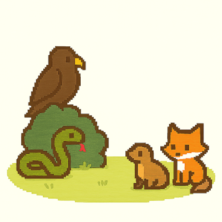

Rabbits are social yet cautious creatures, and understanding their prey instincts is key to giving them the best care. Whether living indoors with other pets or spending time outside, it’s important to be aware of the unique risks they face and how to keep them safe.
Living with Cats and Dogs
While rabbits can live peacefully with cats, always supervise interactions. Cats are natural predators, so slow introductions and barriers (like gates) are helpful. Ensure the rabbit has a safe space to hide, and avoid leaving them unsupervised together. Most cats won’t chase large rabbits, but instincts can still kick in.
Dogs are a tougher match. Many dog breeds have a strong instinct to chase small animals, especially rabbits. If introducing a dog, it should be calm, leashed, and trained to stay. Even a typically gentle dog can act on instinct, so always monitor closely and be ready to separate them at any sign of distress or danger.

Guinea Pigs as Companions
Guinea pigs and rabbits are often kept together because of their similar needs. They can bond well and provide companionship. However, be cautious of illness transmission and make sure both animals have enough space and comfort.
Why Mice, Rats, and Ferrets Are Not Safe
Pet mice and rats are not suitable companions for rabbits. They can carry bacteria and parasites, posing a health risk. Ferrets are predators by nature and have a strong hunting instinct. They should never be housed with rabbits or allowed close contact, even under supervision.
Outdoor Rabbits and Predators
Rabbits left outside are vulnerable to predators like foxes, coyotes, snakes, and birds of prey. Even if predators can’t reach your bunny, the stress from seeing or smelling them nearby can cause serious health issues. Outdoor enclosures must be completely secure and protect against both climbing and digging predators.
Illnesses from Other Pets
Most rabbit diseases are species-specific, but there are still risks when bunnies live with other pets. Rabbits can transmit respiratory bacteria to guinea pigs, and dogs with kennel cough can make rabbits seriously ill. Parasites like fleas, ticks, and ringworm are a shared danger across species, so always keep all pets treated and clean.
Summary
Rabbits can coexist with other pets, but only with care and awareness. Understanding their role as prey animals means recognizing their stress triggers and keeping them safe. By providing safe introductions, proper housing, and parasite prevention, you’ll help your bunny live a longer, more peaceful life—even among furry (or feathered) roommates.